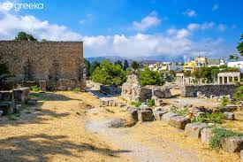

The Ancient Agora
Description: The Ancient Agora of Athens was the center of public life in ancient Athens. It was a bustling marketplace and a political, social, and cultural hub.
History: Established in the 6th century BC, the Agora was surrounded by public buildings, temples, and stoas (covered walkways). It was the site of key democratic activities, including meetings of the Assembly. Important structures included the Stoa of Attalos, the Temple of Hephaestus, and the Monument of the Eponymous Heroes.
The Agora was also the venue for philosophical discussions, particularly those of Socrates and other renowned philosophers. Excavations have revealed a wealth of artifacts, including pottery, inscriptions, and statues, providing insights into the daily life and governance of ancient Athens.